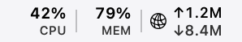
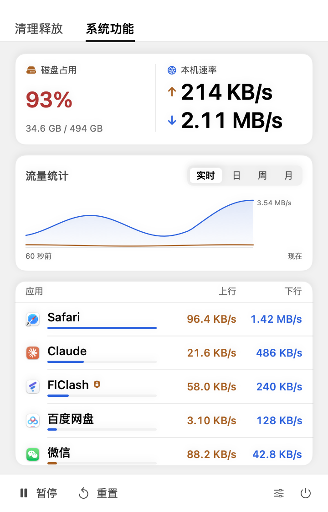
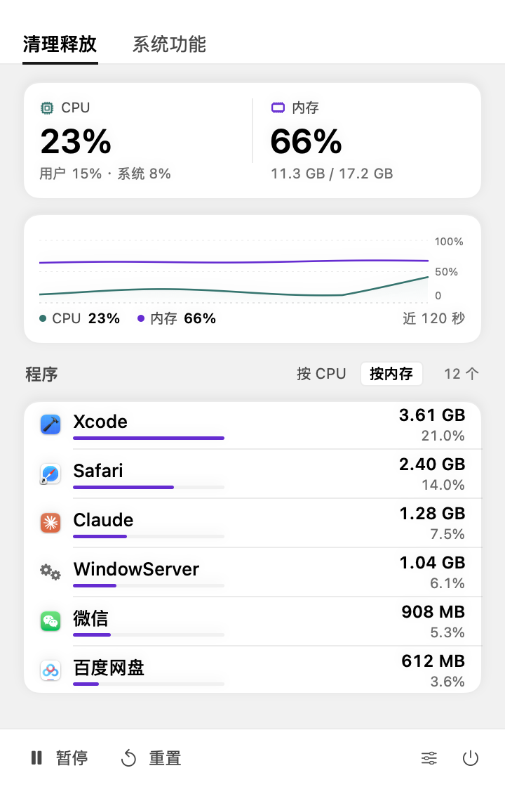
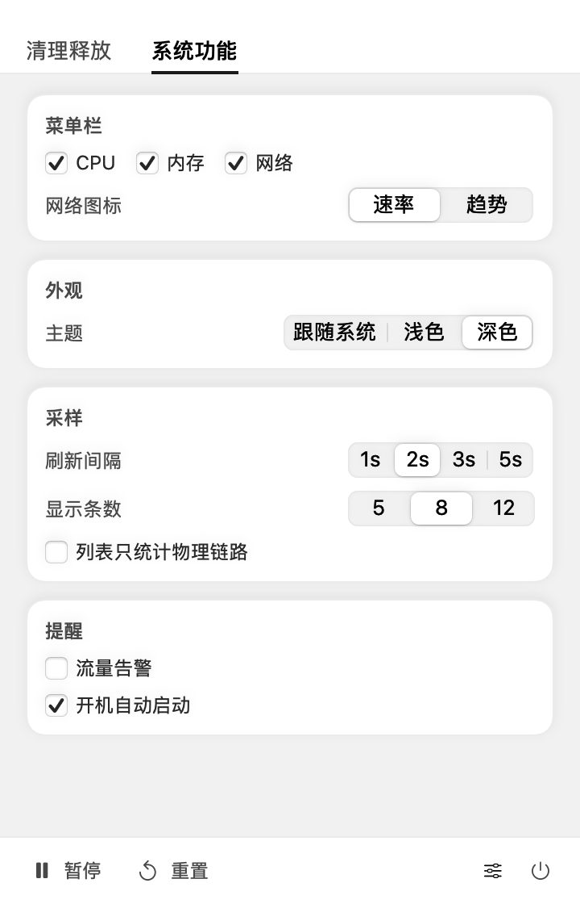

点开就知道
刚才是谁在跑流量
菜单栏里只占一项。CPU、内存、网络用竖线分成三段，点哪段，弹哪段。同一个应用的多个进程并成一行。图表从实时换到日、周、月时，下面的应用排行一起换。

整块约 129pt。三段可以单独关掉。网络段可以改成 40 点趋势图。面板开着时再点菜单栏，是收起，不换页。

系统功能页。左是磁盘占用和可用空间，右是本机速率，上行在上、下行在下。
上行 下行
面板固定 360×560。本页截图都是 1.3.1 的离屏渲染，数字是合成的，用来看清界面，不是某台电脑的用量。
点哪段，看哪段
左键落在 CPU 上，打开清理释放，列表按 CPU 排序。落在内存上，还是这一页，改按内存排序。落在网络上，打开系统功能：磁盘、速率、流量统计和应用列表。
清理释放页把 CPU 和内存并排。两条曲线叠在同一条 0–100% 刻度上，刻度不按峰值拉满。程序列表按 CPU 排序。鼠标悬停在行尾，可以关闭那个应用。
还是清理释放。排序改成按内存。进程 CPU 按单核计，和活动监视器一样：一颗核跑满是 100%，所以榜首程序的百分比可以高于顶部的系统占用。
内存用物理占用。几个进程的数字加起来可以超过物理内存，因为共享页会各算一份。
系统功能页左侧是磁盘占用和可用空间，右侧是本机速率，上行在上、下行在下。下面的流量统计和应用列表用的是同一档。
上行 下行 CPU 内存
| 操作 | 结果 |
|---|---|
| 左键点 CPU | 清理释放，列表按 CPU |
| 左键点内存 | 清理释放，列表按内存 |
| 左键点网络 | 系统功能 |
| 面板开着时再点菜单栏 | 收起，不换页 |
| 点面板外，或按 Esc | 收起 |
| 右键菜单栏 | 三段开关、暂停、网络图标、退出 |
| 面板顶部 | 在清理释放和系统功能之间切换 |
| 底部暂停 / 重置 | 暂停采样，或清空本次累计与曲线。历史保留 |


图表和排行一起换档
流量统计有四档。实时看的是速率，日、周、月看的是这一段时间里每个应用的累计。换档时，曲线和下面的列表一起换，不会一个还停在实时、另一个已经变成一周。
下行，蓝 上行，琥珀 纵轴自动定标


| 档 | 范围 | 曲线 | 点数 | 应用列表 |
|---|---|---|---|---|
| 实时 | 最近 60 秒 | 每秒速率 | 60 | 当前速率 |
| 日 | 过去 24 小时 | 5 分钟平均 | 288 | 这一段的累计 |
| 周 | 过去 7 天 | 30 分钟平均 | 336 | 这一段的累计 |
| 月 | 过去 30 天 | 2 小时平均 | 360 | 这一段的累计 |
历史存在本机，装得越久，月视图越完整。1.3.0 起按新的时间桶重新累计，刚装上时日、周、月几乎是平线，用满一天后才成形。这不是故障。
读数时要知道的口径
没有 root，没有内核扩展，没有系统扩展，也不需要辅助功能、屏幕录制或完全磁盘访问。第三方依赖是零。数据不上传。
- 只统计 TCP / UDP
- ICMP 和部分 RAW socket 不计入，所以和活动监视器不会逐字相同。
- 本机回环不算
- loopback 被排除，
127.0.0.1上的通信不出现在列表里。 - VPN 会让各行之和大于总量
- 走 TUN 时，隧道里的应用和 VPN 客户端各记一份，互为副本。总量只取物理网卡，本身不翻倍。这类行的名称后有盾牌。设置里可以改成「只统计物理链路」，这时各应用之和与总量一致。只跑 IPv6 的隧道不会显示 VPN 标记，总量仍然按物理网卡计算。
- 没有温度和风扇
- 无特权进程读不到 Apple SMC。面板不放拿不到的数，这一格是磁盘占用和本机速率。
- CPU、内存不留历史
- 负载曲线只在面板打开期间保留，退出就没了。流量历史写在本机 SQLite：
~/Library/Application Support/NetScope/traffic.db。 - 列表不是完整进程表
- 没有流量的进程不出现在网络列表里。系统守护进程如果没有应用包，图标是齿轮。程序列表有行数上限，面板里滚动查看。
- 依赖系统自带的 nettop
/usr/bin/nettop随 macOS 提供，不随 NetScope 安装或删除。
采样怎么取到这些数，写在页面最后的短注里。
面板里能改的
右键是快捷开关。完整选项在面板底部的设置里。
- 三段各自显示或隐藏；网络图标用速率，或 40 点趋势。
- 外观：跟随系统、浅色、深色。
- 刷新间隔 1、2、3、5 秒；列表显示条数可调。
- 列表可以改成只统计物理链路。
- 流量告警。阈值 1 / 5 / 10 / 20 MB/s。某个应用连续 3 秒超过阈值才通知，同一个应用 10 分钟内只提醒一次。掉到阈值以下就重新计。
- 开机自动启动。应用要放在「应用程序」里，注册才会成功。

下载
1.3.1 的可执行文件 1,743,488 字节，大约 1.9 MB。应用包大约 3.9 MB，多出来的是系统自带的 SQLite 和通知框架。只提供 Apple 芯片版本。
-
下载 NetScope-macOS-arm64.dmg。这是永久链接，始终指向最新版。也可以从 Releases 进入。
-
同一发布里有
NetScope-macOS-arm64.dmg.sha256。两个文件放在同一目录后核对：shasum -a 256 -c NetScope-macOS-arm64.dmg.sha256 -
打开磁盘映像，把
NetScope.app拖进「应用程序」。开机自动启动要求应用位于可注册位置，放在下载目录或项目目录里，开关会失败并自己关回去。 -
包是临时签名（
codesign --sign -），没有公证。本机第一次打开，Gatekeeper 可能会拦住。在「应用程序」里对 NetScope 右键，选择「打开」；或在终端执行：xattr -dr com.apple.quarantine /Applications/NetScope.app -
要发给别人使用，需要你自己签名并公证。这个发布包不能代替那一步。
源码、构建脚本和许可证都在 github.com/zdx8/NetScope-macOS。许可证是 MIT。清空历史要先退出应用，再删除 ~/Library/Application Support/NetScope。
采样从哪来
这一节只交代数据怎么取到。日常看流量，用上面的面板就够了。
计数来自系统自带的 nettop。默认每秒一次，设置里可以改成 2、3 或 5 秒。为了让文本及时按行出来，子进程跑在 pty 上。退出时先发 SIGTERM；这个进程在 pty 下不响应，所以再补一次 SIGKILL，避免它继续留在后台采样。
总量和列表是两条通道。列表覆盖外部接口，能看到走隧道的应用；总量只用无线和有线网卡上真实经过的字节。因此开着 TUN 型 VPN，或开着虚拟机网卡时，各行相加可能大于总量。
流量按时间桶写在本机 SQLite 里。采样在内存里归并，大约每 30 秒落盘一次。更粗的日、周、月曲线由这些桶覆盖重算得来，查询不再扫每一秒。偏好在 ~/Library/Preferences/com.zdx8.netscope.plist。应用本身不联网。纯逻辑自检有 214 项断言。